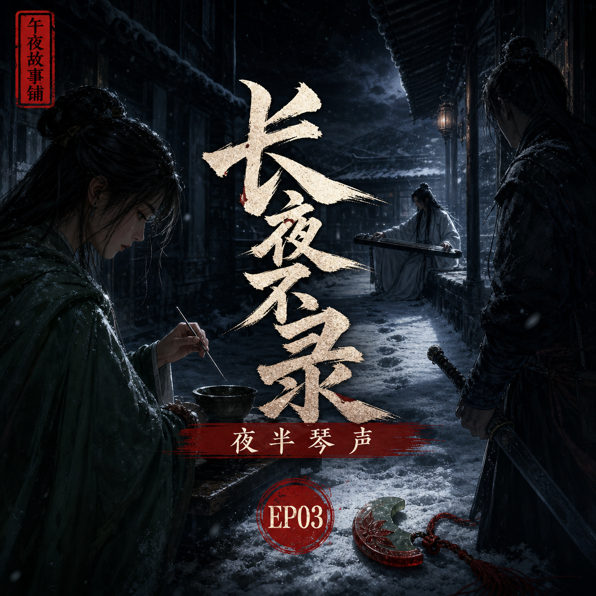

长夜不录：夜半琴声
柳照寒房前的脚步声消失后，白衣客的琴声在三更夜里响了起来

简介
沈砚听见有人停在柳照寒门外，柳照寒却说“你终于来了”。门外那人无声离去，三更后，谢兰舟的琴声忽然响起。温令仪夜半替人疗伤，沈砚在她针法里看出危险，也在谢兰舟的琴音里听出传讯。风雪未停，断云驿里的每个人，都在夜色中做着不能见光的事。
标签
- 古风
- 刑侦
- 武侠
- 医女
- 琴剑
- 暗线
柳照寒房前的脚步声消失后，白衣客的琴声在三更夜里响了起来

沈砚听见有人停在柳照寒门外，柳照寒却说“你终于来了”。门外那人无声离去，三更后，谢兰舟的琴声忽然响起。温令仪夜半替人疗伤，沈砚在她针法里看出危险，也在谢兰舟的琴音里听出传讯。风雪未停，断云驿里的每个人，都在夜色中做着不能见光的事。